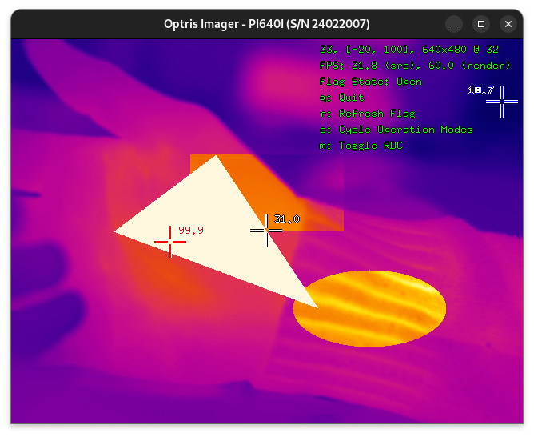
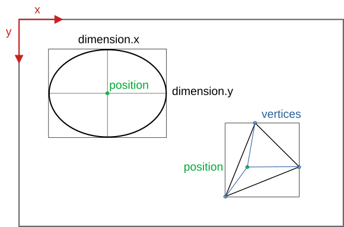
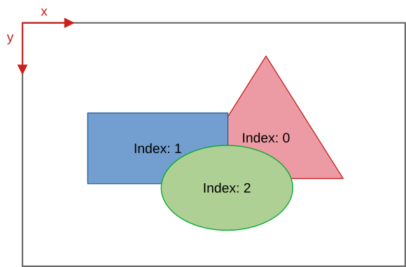

|
Thermal Camera SDK 11.4.10
SDK for Optris Thermal Cameras
|
|
Thermal Camera SDK 11.4.10
SDK for Optris Thermal Cameras
|
Measurement fields are sub-sections of the thermal frame that are independently evaluated by the SDK. The results of these statistical evaluations are provided to SDK clients for each frame via the IRImagerClient::onFrame() callback. They currently include the following data points:
These data points are computed on a pixel by pixel basis and automatically exclude pixels that do not feature a valid temperatures, like those that are introduced by the radial distortion correction.
In addition to the callback you can relay these pieces of information to
By default measurement fields inherit the radiation parameters from the overall thermal frame. This includes the automated estimations of the ambient temperature by the SDK and the manipulations of the emissivity and ambient temperature via the process interface. However, you can specify a custom emissivity for each field.

As seen in the figure above, measurement fields can overlap arbitrarily. Overlapping fields do not interfere with each other, meaning temperatures for pixels in the overlapping sections are computed individually for each field. The order in which the fields are rendered on top of each other is initially defined by the order of their creation with the latest new field being rendered on top of the older ones. That render oder can be changed at runtime through the IRImager interface.
ThermalFrame objects provided by the IRImagerClient::onFrame() as illustrated in the figure above.You can deactivate the processing of measurement fields with the help of the processing output config in the configuration file or via the IRImager::setProcessingOutputs() method. If deactivated,
FrameEvent will no longer contain the status of all active measurement fields.ThermalFrame in the FrameEvent will not include the measurement fields.There are two ways to create measurement fields:
IRImager interface at runtimeIn both cases the same parameters are used. The settings options exposed in the configuration file are mirrored in the MeasurementFieldConfig class that is used to create fields at runtime. The available options fall into three categories:
The SDK currently features four different types of field shapes:
rectangleellipsepolygonspline (based on B-Splines)The positions, dimensions and vertices that define these shapes can either be set in pixels or in normalized values. Normalized values are always in the range [0., 1.] and are relative to the dimensions of the overall thermal frame. If you have, for example, a PI 640I operating in the video format 640x480 and you want to place your field in the center of the frame you can specify its position as (0.5, 0.5). This equates to the following pixel coordinates:
x_pixel or y_pixels the SDK will round it down to the next whole number that is smaller than the fractional value (floor).You have to specify whether or not to use normalized values via the configuration option normalized. This applies to all numeric values defining the shape. You can not mix and match.
Depending on the chosen shape type you have to provide different additional data points defining their form and position within the frame.

position
For rectangles and ellipses the coordinates set in position specify the center point of these shapes. In case of polygons and splines position defines the origin of coordinates for their vertex positions. If you provide the position (0.5, 0.5), you will place rectangular and elliptical fields in the center of the frame. In case of polygons and spline based fields the vertex coordinates need to be set relative that the same center point.
dimension
This option is only relevant for rectangles and ellipses. dimension.x defines the width of a rectangle while for an ellipses it specifies their first diameter parallel to the x-axis of the thermal frame. dimension.y sets the height of rectangles and the second ellipse diameter parallel to the y-axis of the frame.
vertices
This option is only evaluated for polygons and spline based fields. Depending on the shape type the following minimum amount of vertices are required:
polygon: 3spline: 4As already mentioned above the vertices need to be defined relative to the set position. This makes it easier to move these shapes around and enables the SDK to do this efficiently.
If you have a polygon at position (50, 50) in a frame with dimensions (100, 70) and you want to place a vertex at the frame coordinates (30, 20) then you will have to set the following vertex values:
emissivity and customEmissivity
If you wish to use a custom emissivity for the field, you will first have to set the desired value to the emissivity field of the MeasurementFieldConfig and then change the customEmissivity flag to true. If you fail to do the second part the custom emissivity will not be applied.
The handling in the configuration file is easier: Write an emissivity value between the <emissivity> tags for a custom value or leave it blank to inherit it from the overall thermal frame.
To add a measurement field at runtime you first have to create an object of the MeasurementFieldConfig class, then set its data fields to the desired values and finally pass it to the IRImager::addMeasurementField() method.
C++
C#
Python
Upon success the method returns a pointer/reference to a MeasurementField object that can subsequently be used as a handle for the new field.
IRImager::saveConfig() save them permanently.Measurement fields defined in the configuration file are automatically added when establishing a device connection. To access their handles you can use the IRImager::getMeasurementFields() method. They appear in the returned container in the order they are listed in the configuration file.
Upon creation the SDK assigns a unique ID to each measurement field. This ID can be accessed at any time via the MeasurementField::getId() method and stays consistent during the lifetime of the field. Upon removal of a field its ID is released and may be reused for subsequent fields.
In addition to an ID, the SDK assigns each field an index. This index essentially works like the indices of a sequential container. If four measurement fields are active their indices will be in [0, 3]. The next new field will be assigned the index 4. If the field with the index 2 gets removed all field indices greater than 2 are decremented by 1.
Measurement fields specified in the configuration are added in the order in which they are listed in the file.

The IRImager interface offers two methods for manipulating active measurement fields:
updateMeasurementField() allows you to update the measurement field properties that are set in MeasurementFieldConfig.swapMeasurementFieldIndices() allows you to swap the positions of two fields in the rendering order.To manipulate the configuration of a measurement field it is advisable to first get its current configuration via the MeasurementField handle, then change the options as desired and finally update the field by calling IRImager::updateMeasurementField().
normalized in the returned MeasurementFieldConfig before setting the numeric value define the shape. The SDK always converts pixel based values in normalized ones internally and the mixing of pixel based and normalized values is not allowed.C++
C#
Python
To change the rendering hierarchy of the fields you can use the IRImager::swapMeasurementFieldIndices() method. It requires the indices of the two fields that should be swapped as arguments. These can easily be accessed through the getIndex() methods of the MeasurementField class. The SDK updates the indices stored in the MeasurementField objects automatically.
To change the rendering hierarchy in the configuration file you just need to change the order in which they are listed. The first listed field will have the index 0.
IRImager::saveConfig() to do so.Active measurement fields can be removed with the IRImager::removeMeasurementField() method that expects the MeasurementField handle of the field to be removed as argument.
C++
C#
Python
-1. This enables clients to determine whether a field handle still refers to an active field by checking field->getId() < 0.field handle is referring to. It just removes all internal references to them. Let the field handle fall out of scope to trigger their full release.Orphaned. After all clients were updated about this change the SDK removes this channel.Off.